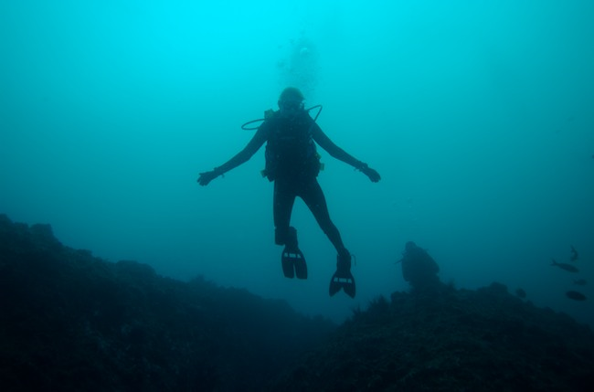

Gregg Kellogg
Index
Previous
51 of 91
Next
Rating: 4
Aperture: ƒ/4
Shutter Speed: 1/100
Exposure Bias: 0 ev
Focal Length (35mm): 24.0mm
Focal Length: 16mm
Keywords: Diving Cocos
Name: Cocos 2006-09-01 031621PM
Date: 9/1/06 4:16:21 PM CST
ISO: ISO 200
File Size: 4.83 MB
Project Path: Costa Rica 2006-08
